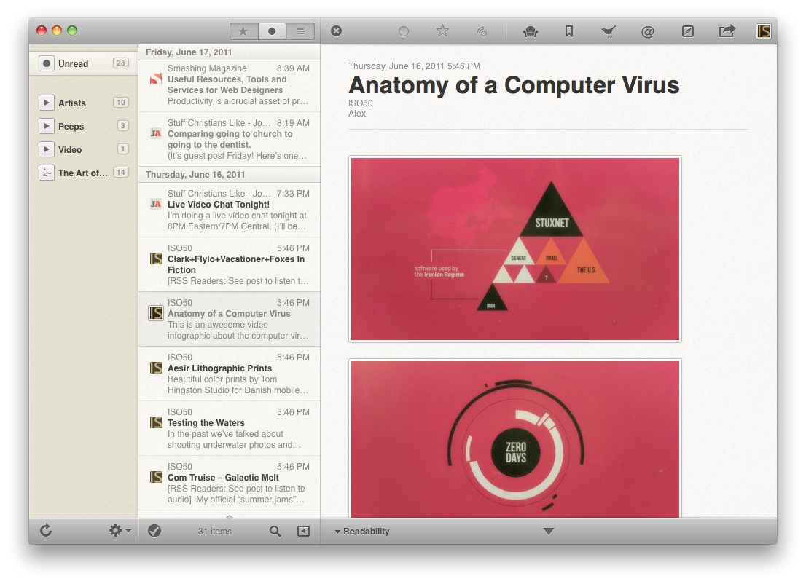

If you have not checked out Reeder for Mac, you really need to. It is a stand-alone application that pulls from, and updates, your Google Reader account, allowing you to check all of your favorite RSS feeds in one fell swoop. Why not use Google Reader's web application? It's already there, right? Correct, but it is so ugly, clunky, slow. Plus, Reeder allows you to download sites for later reading, like when you don't have an internet connection, as well has tons of services tied in with it (Twitter, Readability, Read It Later, Instapaper, just to name a few). I'm just getting started with the Mac version (I've had the iPhone version for about a year now and love it), but there is also multi-touch navigation, customizable short-cuts, and UI customization, for maximum readability. It's $10 on the Mac App Store, which is a bit high for something that you can already get with Google Reader's site, but trust me, your eyes will thank you!